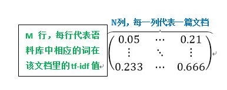
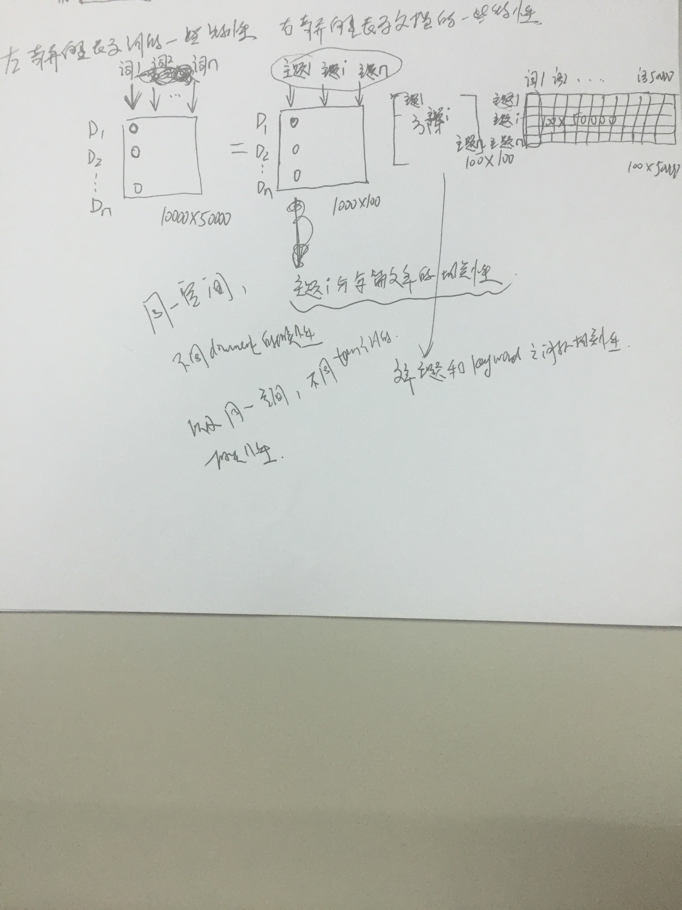
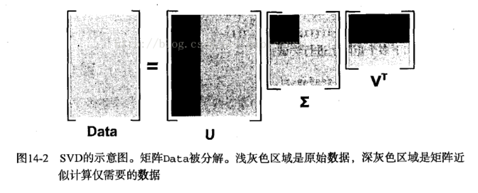

学习记录
Created at 2018-10-15 Updated at 2018-10-25 Category 自然语言处理
早期文本模型简介
TF-IDF文本模型
- 1983年提出，是基于信息论中著名的TF-IDF公式来对文本进行建模的。TF-IDF公式的计算是对两个部分进行乘积，第一个部分称为词频部分（即TF部分），用来表示文本中某个词在该文本中出现的频率，计算上是用该词在该文本中出现的次数除以该文本包含的词的个数；第二个部分称为逆文本部分（即IDF部分），用来表示在语料库中有多少篇文本包含了这个词，计算上是用总文本数除于含该词的文本数再取对数
- 计算好每个词的tf-idf值之后，我们就可以对目标语料库进行建模了。假设语料库中有N篇文档，M个不同的词，那么我们就可以建立一个M * N的矩阵，每一列代表一篇文档，每一行代表某个词在这篇文档中对应的tf-idf值，到此建模就完成啦。我们发现无论每篇包含多少个词，这样建模后每篇文档都被表示成了一个同样长度的向量，向量的每个值就是对应词的tf-idf值。建模矩阵如下图所示：
向量空间模型(Vector Space Model)
- 向量空间模型把文本内容简化处理为向量空间中的向量运算并以空间上的相似度表达语义的相似度。
- 文档(Document): 泛指一般的文本
- 项(Term): 文档的内容特征常常用它所含有的基本语言单位来表示、文档可以用项集表示为D(T1,T2,…,Tn)
- 项的权重: 项常常被赋予一定的权重表示他们在文本D中的重要程度
- 向量空间模型(VSM):由于在文本中既可以重复出现又应该有先后次序的关系,分析起来有一定困难。为了简化分析,暂时不考虑的顺序,并要求互异,这时文档D就可以被看作是一个n维向量了
- 对向量空间模型来说，有两个基本问题：即特征项的选择和项的权重计算
- 特征项选择
- 文本中存在一些没有实在意义但使用频率很高的虚词和功能词 禁用词表 or 进行权重计算时,使它们的权重很低,通过取阀值将它们丢弃 提取形容词、动词和名词作为特征项,并尝试着取代禁用词表方法
- 采用词语作为特征项时还会出现所谓的同义现象 例如电脑和计算机是同一个概念,应该属于同一个特征项,目前最常用的解决方案是采用概念词典来解决这个问题
分词 (好多种方法)
- 基于字符串匹配的分词方法 (1) 最大匹配法 (2) 逆向最大匹配法 (3) 逐词遍历匹配法 (4) 双向扫描法 (5) 最佳匹配法 (6) 设立切分标记法 (7) 有穷多级列举法
- 基于理解的分词方法
- 基于统计的分词方法 (1) 基于词频统计的切词法 (2) 基于期望的切词法
特征值抽取
*特征项选择一般使用统计方法,利用各种计算公式,计算词代表的信息含量,确定一个阀值,将低于阀值的词语过滤掉。或者确定一个特征项数目n,保留处于信息含量在前n位的词条特征提取评估函数
- 文档频数(document frequency)
- 信息增益(information gain)
- 期望交叉熵(expected cross entropy)
- 互信息(mutual information)
###奇异值分解(SVD)


*注上图中等号右边的左右矩阵分别代表在同一个语义空间不同document之间的相关性和同意语义空间不同term之间的相关性。中间矩阵则是语义空间中的正交基。
*注上图中等号右边的左右矩阵分别代表在同一个语义空间不同document之间的相关性和同意语义空间不同term之间的相关性。中间矩阵则是语义空间中的正交基。
LSI文本模型
LSA(latent semantic analysis)潜在语义分析，也被称为LSI(latent semantic index) 该方法和传统向量空间模型(vector space model)一样使用向量来表示词(terms)和文档(documents)，并通过向量间的关系(如夹角)来判断词及文档间的关系；而不同的是，LSA将词和文档映射到潜在语义空间，从而去除了原始向量空间中的一些“噪音”，提高了信息检索的精确度。LSA的基本思想就是把高维的文档降到低维空间，那个空间被称为潜在语义空间。这个映射必须是严格线性的而且是基于共现表（就是那个矩阵啦）的奇异值分解